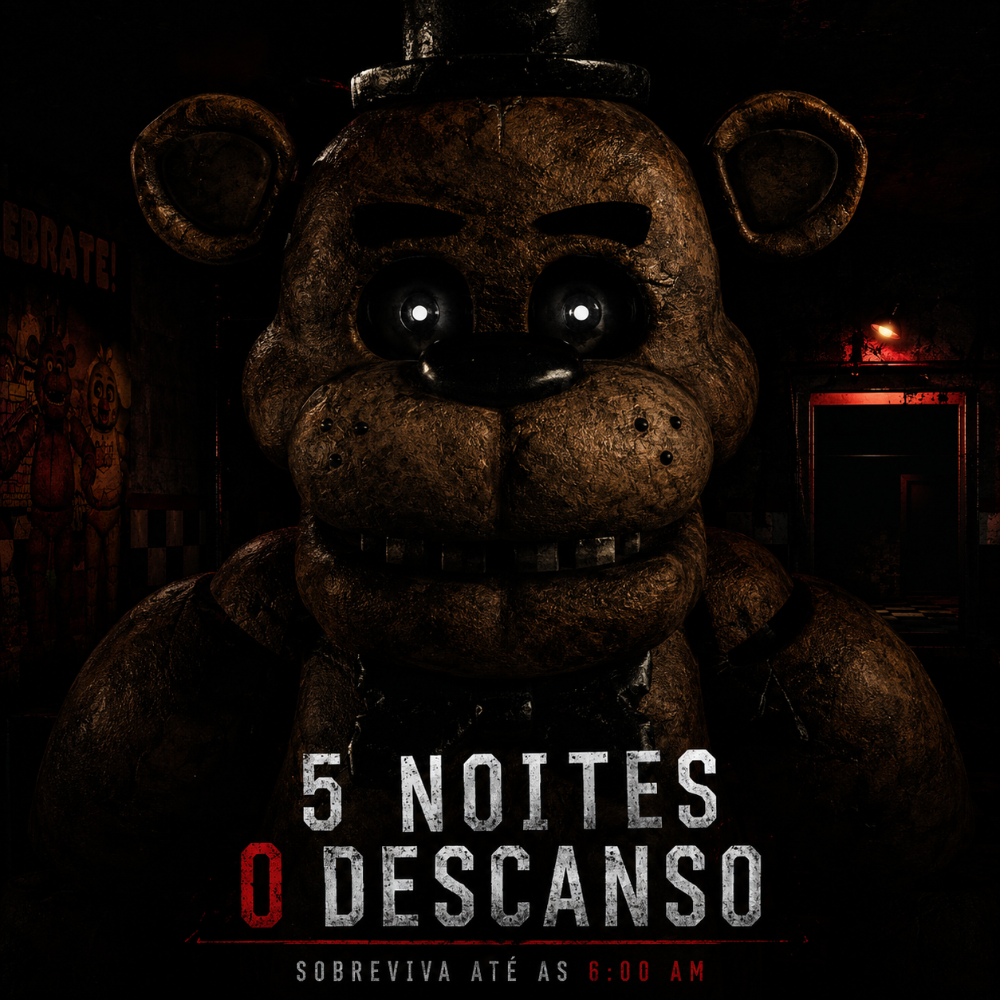

TRANSMISSÃO AO VIVO · SETOR DE SEGURANÇA
FIVE NIGHT
AT FREDDY
5 noites. 0 descanso.
Sobreviva ao turno ou vire estatística.
Freddy não perdoa. Vacilou, morreu.

imagem enviada pelo próprio guarda de plantão — sem edição.
RELATÓRIO DE OCORRÊNCIA
O turno
[22:00] A pizzaria reabriu depois de anos fechada. Contrataram você pro turno da noite. Ninguém explicou direito por quê o último segurança não voltou pra pegar o cheque.
[00:00] As câmeras cobrem quase tudo — quase. O que elas não mostram, você vai ter que sentir vindo pelo corredor.
[03:00] A energia é limitada. Cada porta fechada, cada câmera ligada, custa bateria. Economize errado e o escuro vira o menor dos seus problemas.
[06:00] Sobreviva até o sino tocar. É tudo que pedimos.
MANUAL DO FUNCIONÁRIO
Protocolos do plantão
Monitore as câmeras
Alterne entre os feeds pra saber onde cada um deles está. O que some de uma câmera, aparece em outra — ou na sua porta.
Gerencie a energia
Câmeras, portas e luzes dividem a mesma bateria. Se ela zerar antes do amanhecer, você fica sem defesa nenhuma.
Feche as portas a tempo
Cedo demais, você desperdiça energia à toa. Tarde demais, você não vai precisar mais de energia nenhuma.
Preste atenção nos sons
Passos, respiração. O áudio avisa antes da câmera. Quem joga de fone, chega mais longe.
ARQUIVO DE GRAVAÇÕES
Câmeras de segurança
Capturas do jogo em produção. Novos sinais sendo adicionados a cada atualização.
FICHA TÉCNICA
Requisitos do sistema
Mínimo
- SOWindows 10 (64-bit)
- ProcessadorIntel i5 / Ryzen 5
- Memória8 GB RAM
- VídeoCompatível com directX
- Armazenamento4 GB disponíveis
Recomendado
- SOWindows 10/11 (64-bit)
- ProcessadorIntel i7 / Ryzen 7
- Memória16 GB RAM
- VídeoGTX 750
- Armazenamento4 GB disponíveis (SSD)
GERADOR DE EMERGÊNCIA
A energia acabou.
Só resta uma luz.
Jogo em desenvolvimento. Substitua os links dos botões pelos arquivos finais de cada plataforma antes de publicar o site.